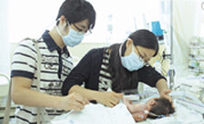

창림 20주년을 맞이해 20명의 환아들에게 꿈과 희망을 심어주기 위한
이 캠페인은, 서울대어린이병원 환아 중 경제적으로 어려움을 겪고 있는
환아 가족에게 치료비를 지원했습니다.
도미노피자는 새로운 희망나눔을 통해 어린이들에게는 환한 웃음을,
가족들에게는 새 희망을 되찾아주고 있습니다.
※개인정보 보호를 위해 가명을 사용하였습니다.
-
승호의 병은 희귀난치성병인‘척추수막류 지방종’. 생후 1개월부터 병원에 다니기 시작한 승호의 증상은 다리가 불편한 것과 지방종 제거 수술의 후유증입니다. 최근에도 방광에 생긴 돌을 제거하는 7번째 수술을 받았습니다. 괜찮으냐는 물음에“좀 아팠는데 이젠 살만해요”라는 대답으로 어른들을 모두 웃음 짓게 만드는 승호는 꽤나 의젓한 모습입니다. 다리가 불편하긴 하지만 보조기 착용으로 도보가 가능하기 때문에 학교도 열심히 다니고 있습니다. 한달에 2번 병원에 오는 날 말고는 결석도 없고, 체육활동까지 늘 적극적으로 참여하는 편이랍니다. 승호가 제일 좋아하는 과목은 과학이지만, 장래희망은 변호사입니다. 어릴 때는 의사가 되고 싶었는데, 얼마 전 TV에서 변호사들이 나와 어려운 사람들을 돕는 프로그램을 보고 꿈을 바꾸었다고 합니다. 승호의 어머니는“태어날 때부터 병원을 다녔지만 이렇게 도움을 받는 것은 처음”이라며“승호와 더 힘내서 살아가겠다”는 감사의 인사를 전했습니다.
-
 상혁이는 지난 4월에 태어난 남자아이입니다. 예정일보다 5주나 일찍 2.45kg의 미숙아로 태어난 상혁이의 병명은‘선천성 팔로사징증’. 심장의 여러 곳에 복합적으로 이상이 있는 이 병 때문에 상혁이는 태어나자마자 인공호흡기를 달았습니다. 태어난 지 39일 만에 받은 수술은 8시간이나 걸린 대수술이었고, 결과는 좋았지만 워낙 작고 약해서 현재도 중환자실에 입원 중입니다. 하루 2번의면회를 통해 상혁이를 만나고 있는 부모님은 경제적으로도 심적으로도 고통이 많았습니다. “무엇보다 아이의 회복만을 걱정해야할 때 돈 걱정부터 해야 한다는 것이 상혁이에게 너무 미안했다”는 엄마는 눈물 때문에 더 이상 말을 잇지 못하셨습니다. 상혁이 어머니는 아직 한 번도 아기를 안아보지 못했다고 합니다. 상혁이가 하루 빨리 건강해져 엄마·아빠의 품에 꼭 안길 수 있기를 바랍니다.
-
2020년 1월에 태어난 주현이의 병은‘좌심실형 단심실’이라고 하는 심장병입니다. 정상의 경우 심장에는 두 개의 심실이 모두 건강하게 작용해야 하는데, 주현이의 경우 양심방이 하나의 심실로만 연결되는 심장기형입니다. 주현이의 부모님은 임신 중 아이의 기형을 미리 알았지만, 결혼 12년 만에 어렵게 가진 귀한 아이라 끝까지 포기하지 않으셨습니다. 주현이는 태어나자마자 대동맥협착으로 인해 첫 번째 수술을 받았고, 지난 7월 두 번째 수술을 받았습니다. 현재는 퇴원해 정기검사 날에만 병원을 찾고 있습니다. 주현이는 워낙 잘 웃고 낯가림도 없어서 부모님에게 큰 기쁨이 되고 있다고합니다.“ 일단은건강한아이로자랐으면좋겠고, 공부도열심히 해서 본인이 받은 도움을 다른 이들에게 돌려줄 수 있는 사람으로 성장했으면 좋겠다”는 것이 주현이 어머니의 바램입니다.
-
다은이의 장래 희망은 흉부외과 의사입니다. 그게 무엇인지 잘 모르는 7살 꼬마 숙녀지만 의사가 되고 싶습니다. 다은이는 5층 병동에서 모르는 사람이 없을 정도로 활달하고 사교적입니다. 좌심실과 우심실 사이 벽에 구멍이 나있는‘심실중격결손’으로 수술을 끝내고 퇴원을 기다리는 다은이. 가장흔한 선천성 심장질환으로 심장병의 약 25%를 차지한다고 합니다. 엄마는 그 동안의 고단함, 도움을 준 이들에 대한 감사의 마음, 그리고 앞으로의 희망 등이 한꺼번에 몰려와 눈시울이 붉어집니다. 이젠 아프지 말자고 새끼손가락을 걸고 도장까지 찍는 두 모녀. 멋진 흉부외과 의사가 되어있을 다은이의 20년 후를 기대합니다.
-
민준이 엄마는 지금 날아갈 것만 같습니다. 10년을 넘게 병으로 고생해 오던 민준이가 수술을 받고 곧 퇴원할 수 있으니 말이죠. 5살 때 발병한‘심실중격결손’은 좌우심방 사이 중격에 구멍이 생기는 심장병입니다. 수술의 결과가 성공적이었다는 의사 선생님의 말에 엄마는 가슴이 벅차 올랐습니다. 성실하고 밝고 긍정적인 민준이는 학교에서‘인기 짱’이라고 합니다. 몸이 불편한 친구들을 도맡아서 도와주기도 하고 함께 잘 놀아주기 때문에 선생님들께 칭찬을 많이 받는다고 합니다. 이제 민준이는 그렇게 타고 싶었던 청룡열차를 아빠와 함께 탈 수 있게 됐습니다.
-
신생아 현중이는‘선천성 대동맥궁단절’을 앓고 있었습니다. 엄마의 뱃속에 있을 때는 알지 못했던 병이었어요. 다행히 인공심폐기 없이 수술할 수 있었지만 어렵기는 마찬가지였습니다. 1.94kg의 몸무게는 수술을 준비하면서 조금 늘었다가 수술 후 다시 제자리입니다. 엄마·아빠는 태어난 지 한달 만에 그 작은 몸으로 많은 일들을 견뎌내야 했던 현중이를 볼 때마다 가슴이 아파오지만 건강하게 자랄 것이라는 믿음으로 감사해합니다. 사랑이 많은 아이로, 남에게 베풀 줄 아는 사람으로 자라기를 바라는 부모님을 위해서 현중이는 오늘도 씩씩하게 이겨낼 것입니다.
-
홀트 아동복지회에서 돌보고 있는 주희(가명). 이제 겨우 16개월 밖에 안 된 주희는 8가지 장애를 안고 태어났습니다. 외형적 장애는 차치하고라도 가장 시급한 것은 자가 호흡이 가능하도록 하는 것입니다. 뇌성마비에 기관지연화증, 기관협착증, 심방중격결손까지. 하지만 그 여린 몸으로도 이름을 불러주면 반응을 보이고 웃기도 하고 떼도 쓰면서 조금씩 자라고 있습니다. 주희는‘행운의 아이’라는 별명을 가지고 있습니다. 언젠가는 건강한 모습으로 장애를 이겨내‘행운의 아이’에서‘기적의 아이’가 되기를 희망합니다.
-
4살 현우는 충북 음성 꽃동네 안에 위치한‘성모의 집’에서 살고 있습니다. 부모님이 계시지만 장애가 심해 현우를 돌볼 형편이 되지 못합니다. 두 형들도 장애가 있어 둘째 형 역시 곧 시설에 들어올예정이라고 합니다. 현우는 얼마 전 수술을 받았습니다. 섬유근종으로 인한‘선천성 가관절증’이라는 병에 걸린 현우는 생후 6개월 된 겨울에 다리뼈가 부러진 후부터 잘 붙질 않았다고 합니다. 이제뼈가 붙고 잘 자라기만을 기다리면 됩니다. 또랑또랑한 눈동자와 오동통한 볼 살이 너무 귀여운 현우는 지적장애 2급에 발육은 조금 더디지만, 활발하고 의지가 강한 아이랍니다.
-
지은이는‘선천성 심실중격결손’과‘담도폐쇄증’이 있었습니다. 그 중 담도폐쇄증은 태아의 성장정지로 담관구성부의 하나 혹은 그 이상에 일어나는 폐쇄 또는 형성부전을 말합니다. 지난 9월 20일 심장수술을 마쳤고, 인터뷰가 있었던 다음 날에는 담도폐쇄증 수술을 받을 예정이었습니다. 어쩌면 간이식을 해야 할지도 모른다고 합니다. 간수치나 회복속도가 다른 아기들과 똑같아 의사 선생님은 담도폐쇄증 수술에도 무리가 없다고 하십니다. 엄마는 지은이에게 건강 외에는 아무것도 바라는 것이 없다고 해요. 엄마의 소원처럼 지은이가 심장도 튼튼, 간도 튼튼하게 자라나기를 바랍니다.
-
다운증후군과 심방중격결손, 그리고 폐렴. 생후 6개월 된 경진이는 36주 미숙아로 태어났습니다. 인터뷰 당일 경진이는 아침 8시에 수술실로 들어갔습니다. 오후 3시쯤 끝이 났다고 하니 참 긴 시간을견뎌냈습니다. 부모님은 그 작은 아이가 전신마취를 한 채로 수술하고 있다는 사실에 너무나 마음 아파했습니다. 그리고 부디 밝고 건강하게 자랐으면 좋겠다며 조심스럽게 말씀하십니다. 여담이라며 피자 중에선 도미노피자가 제일 맛있다면서 웃으시는 아빠. 경진이는 아무리 힘들어도 웃을 수 있는 아이로 자라날 것이라는 믿음이 생겨납니다.
-
작년 5월 장현이가 갑자기 경기를 일으켰습니다. 몸이 경직되어 신경외과 쪽으로 검사를 해본 결과 좌측 측두엽 해마 부분에 양성 종양이 있는 것을 발견했습니다. 지난 10월 18일 종양을 떼어내는 수술을 성공적으로 진행했고, 경기 증상도 90% 완치가 가능하다고 합니다. 4살 장현이는 밝고 잘 웃는 아이라고 합니다. 수술 후 말이 없어 내성적으로 변하는 것이 아닌가 싶어 걱정했는데, 열이 내리자 예전으로 돌아왔다고 해요. 아빠는 더 이상 바랄 게 없다면서 장현이가 자라면 씩씩한 군인으로 나라에 봉사하기를 바란다며 웃습니다.
-
난치성 간질을 앓고 있는 석영이는 생후 3일이 지났을 때‘고인슐린혈증’진단을 받았습니다. 인슐린 과다로 저혈당이 생기면서 뇌손상이 진행되는 증상인데, 그 다음 해부터는 간질증상을 보였다고 합니다. 약물을 복용하면서 경기는 없었는데 사춘기에 접어들면서 다시 경기가 심해졌습니다. 결국 지난해 8월 미주신경자극술을 받았지만 증상에는 호전이 없었습니다. 석영이는 현재 장애 1급으로, 모든 것이 퇴행하고 있습니다. 이번 달에는 도미노피자의 도움으로 뇌량절제술을 받았지만, 앞으로도 계속 수술을 받아야만 해서 부모님의 마음이 너무 아픕니다. 부디 석영이가 조금이라도 더 건강해지기를 소망합니다.
-
아빠는 엄마의 미소와 예쁜 눈에 반해서 결혼했다고 합니다.“ 주하가 건강하게 자라는 것 말고는 바라는 게 없다”는 인화의 엄마는 베트남에서 오신 분이랍니다. 인화는‘만성신부전증’을 앓고 있습니다. 태내에 있을 때 엉덩이에서 커다란 혹이 발견됐었습니다. 혹을 떼어내면서 후유증으로 혈액과 장기, 신장, 소화기관, 머리카락에 이르기까지 여러 곳이 손상됐습니다. 특히 소화기능이 약해 잘 먹지 못하는 것을 부모님은 가장 마음 아파합니다. 그래도 주하는 적극적이고 활달한 엄마를 닮아서 명랑한 성격이랍니다. 비록 성장은 더디지만 잘 키워서 도움이 필요한 이들에게 힘이 될 수 있는 사람으로 컸으면 하는 것이 부모님의 꿈입니다.
-
지현이의 병명은‘선천성뇌발육장애’라고 합니다. 구순구개열이 있어서 생후 9일째 성형외과 수술을 받았는데, 퇴원 후 경기가 있어 검사를 했더니 뇌에 주름이 없었습니다. 다른 아이들보다 지능이떨어지고 언어표현력도 떨어집니다. 11살 때 경기를 매우 심하게 일으킨 이후로는 먹는 것조차 힘들어졌습니다. 3년 전부터는 외부에서 위까지 튜브를 연결해 직접 음식물을 투여하고 있는 상황 입니다. 작년부터 조금씩 회복되고 있는 것 같아 엄마는 걱정을 조금 덜었습니다. 지현이에게는 누나가 둘 있는데, 엄마를 많이 도와준다고 합니다. 특수학교에 다니고 있는 지현이는 음악수업을 가장좋아합니다.“ 지현이를 끝까지 잘 키우는 것으로 고마운 분들에게 보답하겠다”는 말로 엄마는 감사의 마음을 전합니다.
-
가영이의 병은 항문이 막혀있는‘항문폐쇄증’입니다. 태어나서 지금까지 벌써 세 차례의 큰 수술을 받았습니다. 게다가 귀와 코가 자라지 않고 있고, 키도 더디게 자라고 있습니다. 몇 년 후엔 성장호르몬 검사를 하고, 10세 이후에는 귀와 코의 이식수술을 받아야 할 것 같습니다. 하지만 가영이는 방긋방긋 잘 웃는 밝은 아이입니다. 경제적으로도 힘들지만 마음이 더욱 힘들다는 엄마는 그래도 잘 버텨주는 가영이 때문에 힘을 얻고 있다고 합니다. 계속되는 수술에 망연자실 했는데, 도미노피자와 주변으로부터 받은 여러 도움 덕분에 가영이의 부모님은 정말 많은 용기를 얻었습니다.
-
주연이는‘뇌성마비 뇌병변’3급입니다. 미숙아로 태어나 인큐베이터에 있을 때 뇌출혈로 뇌성마비가 왔는데, 이후 인지능력이 떨어졌고 다리에 마비가 와 걷기가 힘들어졌습니다. 주연이는 5살 때처음으로 걸었습니다. 보조기를 사용하고 주사도 맞으며 운동을 병행했습니다. 지금은 보조기를 착용하지 않게 됐고, 다리에 정기적으로 보톡스 주사를 맞는 치료를 받고 있습니다. 힘든 치료에도 주연이는 의젓하게 잘 견디고 있습니다. 현재 주연이는 까치발로 걷고 있는데, 도미노피자 덕분에 뒤꿈치를 땅에 닿을 수 있게 하는 수술을 받게 되었다고 합니다. 수술 후 주연이가 건강해지면 온 가족이 함께 스케이트를 타러 가자는 약속을 했다고 합니다. 올 겨울이 지나면 당당한 걸음걸이로 친구들과 함께 재잘거릴 주연이의 모습을 그려봅니다.
-
미진이의 병명은 사구체신염으로 인한‘만성신부전증’입니다. 3살 때 감기로 병원에 갔다가 신장이 좋지 않은 것을 알았다고 합니다. 8살 때까지는 복막투석과 약물치료를 병행했고, 9살 때 신장이식을 받았습니다. 그런데 3년 후 거부반응이 왔고, 이후부터 계속 혈액투석을 받고 있습니다. 고등학생인 미진이는 종일 학교에서 공부하고 수업이 끝나면 병원에 가서 투석을 하는 힘든 생활을 반복하고 있지만 씩씩한 모습입니다. 작가와 요리사라는 두 가지 꿈을 놓고 고민이라는 꿈 많은 여고생 미진이. 자신 때문에 고생하시는 엄마에게 평생 효도하는 것이 바람이라는 그녀는 마음 또한 아름답습니다.
-
재혁이의 병은‘기도협착증’입니다. 숨을 쉴 때 기도가 완전히 열리지 않는 증상이라고 합니다. 현재는 기도협착으로 기관절개관을 삽입한 상태입니다. 또‘난청’과‘잠복고환증’이 있어 치료와 수술을 받았습니다. 감기라도 걸리면 폐렴으로 발전할 가능성이 많아, 재혁이의 엄마는 늘 마음이 조마조마합니다. 재혁이는 아직까지 목소리가 제대로 안 나오고, 옹알이도 못했습니다. 앞으로 남은 와우시술과 언어치료가 잘 되기만을 바랄 뿐입니다. 복합질환으로 힘들어하는 재혁이만큼 엄마 역시 심적으로 경제적으로 힘들어하고 있습니다. 앞으로 재혁이가 말을 할 정도로 건강해질 때까지 많은 어려움이 있겠지만, 재혁이가“엄마!”라고 부를 그 날은 분명 곧 다가올 것입니다.
-
석민이 엄마는 결혼 7년 만에 인공수정을 통해 세쌍둥이를 임신했습니다. 병원에서는 산모와 아이들 모두 위험해 질 수 있으니 유산을 권유했지만, 부모님은 셋 모두를 낳기를 원했습니다. 그래서 임신 28주차에 아이들을 조산했습니다. 두 아이는 인큐베이터에 있다가 두 달 후 퇴원 했는데, 막내 석민이는 장이 막혀 소화가 잘 안 되는 증상이 나타났습니다. 그래서 장을 꺼냈다 다시 넣는 수술을 두 차례나 했습니다. 지금 석민이는 금식까지 하고 있는데다 몸이 많이 약해져 걱정입니다. 무조건 건강하기만을 바란다는 석민이 부모님은 도미노피자의 도움을 받게 되어 정말 많은 힘이 되었다며 감사의 인사를 전했습니다.
-
처음 준석이에게 도미노피자의 후원 소식을 전했을 때, 준석이의 첫 말은“그럼 피자도 줘?”였다고 합니다. 그만큼 피자를 좋아하는 명랑한 부산 소년 준석이는 현재‘만성신부전증’을 앓고 있습니다. 6살 때 발병했고, 2년 전부터 투석을 받고 있습니다. 현재는 장기이식센터에 신장이식을 신청해 놓은 상태입니다. 병과 치료에 대한 스트레스가 많을 텐데, 친구들에게도 알리지 않고 학교생활을 잘해내고 있는 준석이의 모습이 대견스럽습니다. 오랜 치료로 병원비가 큰 부담이었는데, 도미노피자로부터 도움을 받아 너무 기쁘다고 하시는 준석이 부모님.“ 준석이도 다른 사람을 도와줄 수 있는 사람이 되었으면 좋겠다”는 부모님의 바람은 꼭 이루어질 것입니다.